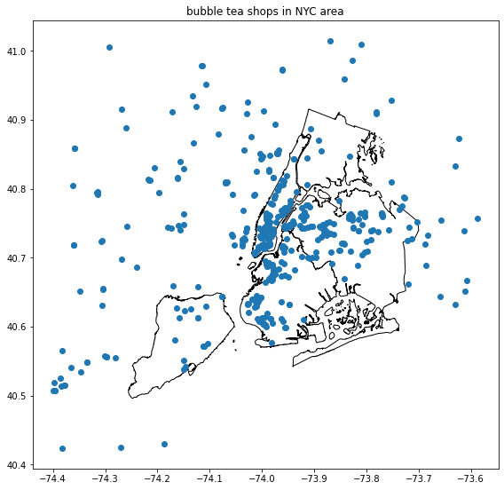
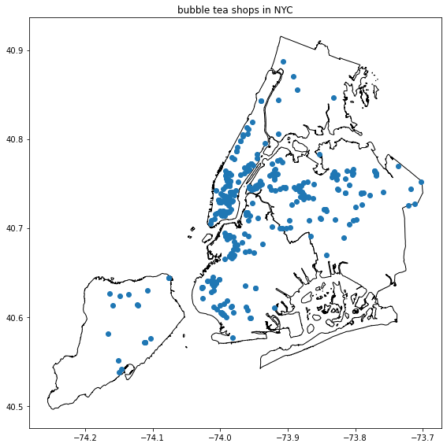

Retrieving Bubble Tea Shops in NYC Using Yelp Fusion API
Retrieving Bubble Tea Shops in NYC Using Yelp Fusion API¶
Mark Bauer
# importing libraries
import os
import pandas as pd
import numpy as np
import geopandas as gpd
import matplotlib.pyplot as plt
import requests
from decouple import AutoConfig
# API only returns 1,000 results and 50 per request
# we use the offset parameter to page through to the next 50
# source: https://www.yelp.com/developers/faq
# saving my api key as an environment variable
API_KEY = os.environ.get('YELP_API')
if API_KEY is None:
config = AutoConfig(search_path = '.')
API_KEY = config('YELP_API')
# empty list to place our data for each page
lst = []
# our offset parameter - each page 50 rows
offset = 0
print('initial offset number: {}'.format(offset))
# loop through the api 20 times (limit is 1000 rows with each page includes 50 rows)
for i in range(20):
try:
headers = {'Authorization': 'Bearer {}'.format(API_KEY)}
search_api_url = 'https://api.yelp.com/v3/businesses/search'
params = {
'term': 'bubble tea',
'categories': 'bubbletea, boba',
'location': 'New York City',
'offset': offset,
'limit': 50}
response = requests.get(search_api_url,
headers=headers,
params=params,
timeout=10)
# return a dictionary
data_dict = response.json()
# convert the business dictionary to a pandas dataframe
data = pd.DataFrame(data_dict['businesses'])
# append dataframe to list
lst.append(data)
# add 50 to the offset to access a new page
offset += 50
print('current offset number: {}'.format(offset))
except Exception as ex:
print('exception: {}\nexit loop.'.format(ex))
break
# concatenate all pages to one dataframe
df = pd.concat(lst)
df = df.reset_index(drop=True)
rows, columns = df.shape
print()
print('query includes {:,} rows and {} columns.'.format(rows, columns))
print('row id is unique: {}.'.format(df['id'].is_unique))
if df['id'].is_unique == False:
duplicates = df.loc[df.duplicated(subset=['id'])]
vals = list(duplicates.head()['name'].values)
print('\nduplicates found: {}.'.format(vals))
df = df.drop_duplicates(subset=['id']).reset_index(drop=True)
print('dropping duplicates...')
rows, columns = df.shape
print('\nrow id is unique: {}.'.format(df['id'].is_unique))
print('query includes {:,} rows and {} columns.'.format(rows, columns))
initial offset number: 0
current offset number: 50
current offset number: 100
current offset number: 150
current offset number: 200
current offset number: 250
current offset number: 300
current offset number: 350
current offset number: 400
current offset number: 450
current offset number: 500
current offset number: 550
current offset number: 600
current offset number: 650
current offset number: 700
current offset number: 750
current offset number: 800
current offset number: 850
current offset number: 900
current offset number: 950
current offset number: 1000
query includes 548 rows and 16 columns.
row id is unique: False.
duplicates found: ['A-Yo Tea Shop'].
dropping duplicates...
row id is unique: True.
query includes 547 rows and 16 columns.
df.head()
| id | alias | name | image_url | is_closed | url | review_count | categories | rating | coordinates | transactions | price | location | phone | display_phone | distance | |
|---|---|---|---|---|---|---|---|---|---|---|---|---|---|---|---|---|
| 0 | Q3fmTHT7zilDWtfzLK9lMA | truedan-new-york-3 | Truedan | https://s3-media2.fl.yelpcdn.com/bphoto/BmUZXO... | False | https://www.yelp.com/biz/truedan-new-york-3?ad... | 99 | [{'alias': 'bubbletea', 'title': 'Bubble Tea'}] | 4.5 | {'latitude': 40.7191742, 'longitude': -73.9962... | [delivery, pickup] | $$ | {'address1': '208 Grand St', 'address2': None,... | +16465592886 | (646) 559-2886 | 1535.241614 |
| 1 | bVJQEeRNi34-3XN_F1AZEg | xing-fu-tang-new-york | Xing Fu Tang | https://s3-media2.fl.yelpcdn.com/bphoto/cyFHFE... | False | https://www.yelp.com/biz/xing-fu-tang-new-york... | 85 | [{'alias': 'bubbletea', 'title': 'Bubble Tea'}] | 4.5 | {'latitude': 40.7288, 'longitude': -73.98775} | [delivery, pickup] | NaN | {'address1': '133 2nd Ave', 'address2': '', 'a... | 2656.450427 | ||
| 2 | 7-bx74TooPuZKZDNW4WFcQ | chun-yang-tea-new-york | Chun Yang Tea | https://s3-media1.fl.yelpcdn.com/bphoto/JrGwrZ... | False | https://www.yelp.com/biz/chun-yang-tea-new-yor... | 90 | [{'alias': 'bubbletea', 'title': 'Bubble Tea'}] | 4.5 | {'latitude': 40.71617, 'longitude': -73.9971} | [delivery, pickup] | $$ | {'address1': '26B Elizabeth St', 'address2': '... | +12124200123 | (212) 420-0123 | 1212.877370 |
| 3 | 3aypSFXLfkAL4dhHVFobKg | lazy-sundaes-new-york-6 | Lazy Sundaes | https://s3-media3.fl.yelpcdn.com/bphoto/kEfCYC... | False | https://www.yelp.com/biz/lazy-sundaes-new-york... | 32 | [{'alias': 'bubbletea', 'title': 'Bubble Tea'}... | 4.5 | {'latitude': 40.720597, 'longitude': -73.984539} | [delivery, pickup] | $$ | {'address1': '23 Clinton St', 'address2': None... | 1877.016204 | ||
| 4 | zupVwJAFYkHDwrsQd2ktXA | fiftylan-union-square-new-york-3 | FIFTYLAN Union Square | https://s3-media3.fl.yelpcdn.com/bphoto/UIwR20... | False | https://www.yelp.com/biz/fiftylan-union-square... | 57 | [{'alias': 'bubbletea', 'title': 'Bubble Tea'}] | 4.0 | {'latitude': 40.735516, 'longitude': -73.989191} | [delivery, pickup] | NaN | {'address1': '32 Union Square E', 'address2': ... | +16467670085 | (646) 767-0085 | 3367.900728 |
df.tail()
| id | alias | name | image_url | is_closed | url | review_count | categories | rating | coordinates | transactions | price | location | phone | display_phone | distance | |
|---|---|---|---|---|---|---|---|---|---|---|---|---|---|---|---|---|
| 542 | QBebLBqhiuDlWasPgp6s4Q | tbaar-flushing-5 | Tbaar | https://s3-media1.fl.yelpcdn.com/bphoto/bgao-b... | False | https://www.yelp.com/biz/tbaar-flushing-5?adju... | 2 | [{'alias': 'bubbletea', 'title': 'Bubble Tea'}] | 3.5 | {'latitude': 40.759357, 'longitude': -73.830396} | [pickup, delivery] | NaN | {'address1': '135-52 Roosevelt Ave', 'address2... | 15054.917573 | ||
| 543 | Vz6hbICqQfyMWq9wzAKakw | tbaar-flushing-4 | TBaar | https://s3-media1.fl.yelpcdn.com/bphoto/phUYWa... | False | https://www.yelp.com/biz/tbaar-flushing-4?adju... | 6 | [{'alias': 'bubbletea', 'title': 'Bubble Tea'}... | 4.0 | {'latitude': 40.7613116, 'longitude': -73.8308... | [] | NaN | {'address1': '37-11 Main St', 'address2': '', ... | 15147.410738 | ||
| 544 | 7apqk24GsFC9dptoD5dDZg | uncleman-cafe-new-york | Uncleman Cafe | False | https://www.yelp.com/biz/uncleman-cafe-new-yor... | 1 | [{'alias': 'desserts', 'title': 'Desserts'}, {... | 1.0 | {'latitude': 40.71781, 'longitude': -73.99795} | [] | NaN | {'address1': '122 Mulberry St', 'address2': No... | +12129666206 | (212) 966-6206 | 1414.238245 | |
| 545 | YBgAPbviWYtVP2gAUhc7_A | t-baar-flushing | T Baar | https://s3-media4.fl.yelpcdn.com/bphoto/8pk-_Q... | False | https://www.yelp.com/biz/t-baar-flushing?adjus... | 8 | [{'alias': 'bubbletea', 'title': 'Bubble Tea'}] | 3.5 | {'latitude': 40.7587509, 'longitude': -73.830162} | [] | $ | {'address1': '135-36 40th Rd', 'address2': '',... | 15045.970192 | ||
| 546 | f5UVQXvDpOrrIZdCjsw47w | maxins-cafe-flushing | Maxin's Cafe | https://s3-media1.fl.yelpcdn.com/bphoto/S3vWvD... | False | https://www.yelp.com/biz/maxins-cafe-flushing?... | 15 | [{'alias': 'bakeries', 'title': 'Bakeries'}, {... | 3.5 | {'latitude': 40.7585, 'longitude': -73.83064} | [] | $ | {'address1': '135-24 40th Rd', 'address2': '',... | +17188869200 | (718) 886-9200 | 14997.842205 |
df.info()
<class 'pandas.core.frame.DataFrame'>
RangeIndex: 547 entries, 0 to 546
Data columns (total 16 columns):
# Column Non-Null Count Dtype
--- ------ -------------- -----
0 id 547 non-null object
1 alias 547 non-null object
2 name 547 non-null object
3 image_url 547 non-null object
4 is_closed 547 non-null bool
5 url 547 non-null object
6 review_count 547 non-null int64
7 categories 547 non-null object
8 rating 547 non-null float64
9 coordinates 547 non-null object
10 transactions 547 non-null object
11 price 332 non-null object
12 location 547 non-null object
13 phone 547 non-null object
14 display_phone 547 non-null object
15 distance 547 non-null float64
dtypes: bool(1), float64(2), int64(1), object(12)
memory usage: 64.8+ KB
df['name'].value_counts()
Gong Cha 36
Kung Fu Tea 34
ViVi Bubble Tea 21
Möge Tee 10
CoCo Fresh Tea & Juice 8
..
Lotus Vietnamese Sandwiches 1
Yummy Boba Desserts 1
Drunk Tea 1
Bobaly 1
Maxin's Cafe 1
Name: name, Length: 364, dtype: int64
df['name'].value_counts().head(20)
Gong Cha 36
Kung Fu Tea 34
ViVi Bubble Tea 21
Möge Tee 10
CoCo Fresh Tea & Juice 8
Vivi Bubble Tea 6
Coco Fresh Tea & Juice 6
Tiger Sugar 5
Banhmigos 4
Real Fruit Bubble Tea 4
TBaar 4
Hawa Smoothies & Bubble Tea 4
Chun Yang Tea 4
Meet Fresh 4
Tbaar 3
Teazzi Tea Shop 3
Yi Fang Taiwan Fruit Tea 3
Lazy Sundaes 3
Jupioca 3
Yaya Tea Garden 3
Name: name, dtype: int64
df['categories'][0]
[{'alias': 'bubbletea', 'title': 'Bubble Tea'}]
gdf = pd.concat([df, df['coordinates'].apply(pd.Series)], axis=1)
gdf = gpd.GeoDataFrame(gdf, crs=4326,
geometry=gpd.points_from_xy(gdf.longitude, gdf.latitude))
gdf.head()
| id | alias | name | image_url | is_closed | url | review_count | categories | rating | coordinates | transactions | price | location | phone | display_phone | distance | latitude | longitude | geometry | |
|---|---|---|---|---|---|---|---|---|---|---|---|---|---|---|---|---|---|---|---|
| 0 | Q3fmTHT7zilDWtfzLK9lMA | truedan-new-york-3 | Truedan | https://s3-media2.fl.yelpcdn.com/bphoto/BmUZXO... | False | https://www.yelp.com/biz/truedan-new-york-3?ad... | 99 | [{'alias': 'bubbletea', 'title': 'Bubble Tea'}] | 4.5 | {'latitude': 40.7191742, 'longitude': -73.9962... | [delivery, pickup] | $$ | {'address1': '208 Grand St', 'address2': None,... | +16465592886 | (646) 559-2886 | 1535.241614 | 40.719174 | -73.996220 | POINT (-73.99622 40.71917) |
| 1 | bVJQEeRNi34-3XN_F1AZEg | xing-fu-tang-new-york | Xing Fu Tang | https://s3-media2.fl.yelpcdn.com/bphoto/cyFHFE... | False | https://www.yelp.com/biz/xing-fu-tang-new-york... | 85 | [{'alias': 'bubbletea', 'title': 'Bubble Tea'}] | 4.5 | {'latitude': 40.7288, 'longitude': -73.98775} | [delivery, pickup] | NaN | {'address1': '133 2nd Ave', 'address2': '', 'a... | 2656.450427 | 40.728800 | -73.987750 | POINT (-73.98775 40.72880) | ||
| 2 | 7-bx74TooPuZKZDNW4WFcQ | chun-yang-tea-new-york | Chun Yang Tea | https://s3-media1.fl.yelpcdn.com/bphoto/JrGwrZ... | False | https://www.yelp.com/biz/chun-yang-tea-new-yor... | 90 | [{'alias': 'bubbletea', 'title': 'Bubble Tea'}] | 4.5 | {'latitude': 40.71617, 'longitude': -73.9971} | [delivery, pickup] | $$ | {'address1': '26B Elizabeth St', 'address2': '... | +12124200123 | (212) 420-0123 | 1212.877370 | 40.716170 | -73.997100 | POINT (-73.99710 40.71617) |
| 3 | 3aypSFXLfkAL4dhHVFobKg | lazy-sundaes-new-york-6 | Lazy Sundaes | https://s3-media3.fl.yelpcdn.com/bphoto/kEfCYC... | False | https://www.yelp.com/biz/lazy-sundaes-new-york... | 32 | [{'alias': 'bubbletea', 'title': 'Bubble Tea'}... | 4.5 | {'latitude': 40.720597, 'longitude': -73.984539} | [delivery, pickup] | $$ | {'address1': '23 Clinton St', 'address2': None... | 1877.016204 | 40.720597 | -73.984539 | POINT (-73.98454 40.72060) | ||
| 4 | zupVwJAFYkHDwrsQd2ktXA | fiftylan-union-square-new-york-3 | FIFTYLAN Union Square | https://s3-media3.fl.yelpcdn.com/bphoto/UIwR20... | False | https://www.yelp.com/biz/fiftylan-union-square... | 57 | [{'alias': 'bubbletea', 'title': 'Bubble Tea'}] | 4.0 | {'latitude': 40.735516, 'longitude': -73.989191} | [delivery, pickup] | NaN | {'address1': '32 Union Square E', 'address2': ... | +16467670085 | (646) 767-0085 | 3367.900728 | 40.735516 | -73.989191 | POINT (-73.98919 40.73552) |
url = 'https://data.cityofnewyork.us/api/geospatial/tqmj-j8zm?method=export&format=Shapefile'
boro_gdf = gpd.read_file(url)
boro_gdf.head()
| boro_code | boro_name | shape_area | shape_leng | geometry | |
|---|---|---|---|---|---|
| 0 | 1.0 | Manhattan | 6.366208e+08 | 359993.127161 | MULTIPOLYGON (((-74.01093 40.68449, -74.01193 ... |
| 1 | 2.0 | Bronx | 1.187194e+09 | 463868.935588 | MULTIPOLYGON (((-73.89681 40.79581, -73.89694 ... |
| 2 | 3.0 | Brooklyn | 1.934174e+09 | 728195.194837 | MULTIPOLYGON (((-73.86327 40.58388, -73.86381 ... |
| 3 | 5.0 | Staten Island | 1.623631e+09 | 325924.002252 | MULTIPOLYGON (((-74.05051 40.56642, -74.05047 ... |
| 4 | 4.0 | Queens | 3.040206e+09 | 900269.281914 | MULTIPOLYGON (((-73.82645 40.59053, -73.82642 ... |
fig, ax = plt.subplots(figsize=(8, 8))
gdf.plot(ax=ax)
boro_gdf.plot(ax=ax, facecolor='None', edgecolor='black', zorder=0)
plt.title('bubble tea shops in NYC area')
plt.tight_layout()

gdf = gpd.clip(gdf, boro_gdf)
gdf = gdf.reset_index(drop=True)
gdf.shape
C:\Users\datal\AppData\Local\Temp\ipykernel_45668\2316523936.py:1: UserWarning: CRS mismatch between the CRS of left geometries and the CRS of right geometries.
Use `to_crs()` to reproject one of the input geometries to match the CRS of the other.
Left CRS: EPSG:4326
Right CRS: GEOGCS["WGS84(DD)",DATUM["WGS84",SPHEROID["WGS84", ...
gdf = gpd.clip(gdf, boro_gdf)
(409, 19)
gdf.head()
| id | alias | name | image_url | is_closed | url | review_count | categories | rating | coordinates | transactions | price | location | phone | display_phone | distance | latitude | longitude | geometry | |
|---|---|---|---|---|---|---|---|---|---|---|---|---|---|---|---|---|---|---|---|
| 0 | BLnq_CETaoJYQB7U3IxGCw | mr-chicken-and-mrs-tea-ozone-park | Mr.Chicken & Mrs.Tea | https://s3-media2.fl.yelpcdn.com/bphoto/QLxNJs... | False | https://www.yelp.com/biz/mr-chicken-and-mrs-te... | 97 | [{'alias': 'chicken_wings', 'title': 'Chicken ... | 4.5 | {'latitude': 40.6698487, 'longitude': -73.8423... | [pickup, delivery] | NaN | {'address1': '150-29 Crossbay Blvd', 'address2... | +13475350010 | (347) 535-0010 | 13456.986110 | 40.669849 | -73.842308 | POINT (-73.84231 40.66985) |
| 1 | 1IwCoN9jVu4O-jaeEKH83w | halo-kitchen-and-lounge-queens | Halo Kitchen & Lounge | https://s3-media2.fl.yelpcdn.com/bphoto/s7DKo7... | False | https://www.yelp.com/biz/halo-kitchen-and-loun... | 12 | [{'alias': 'bubbletea', 'title': 'Bubble Tea'}... | 2.5 | {'latitude': 40.68871402307153, 'longitude': -... | [pickup, delivery] | NaN | {'address1': '12710 Liberty Ave', 'address2': ... | +19293860928 | (929) 386-0928 | 15021.671634 | 40.688714 | -73.817481 | POINT (-73.81748 40.68871) |
| 2 | j5x37Ozo9hc3--zdMnZfEA | pop-pot-noodle-and-tea-spot-queens-2 | Pop Pot Noodle & Tea Spot | https://s3-media2.fl.yelpcdn.com/bphoto/SDb9ck... | False | https://www.yelp.com/biz/pop-pot-noodle-and-te... | 16 | [{'alias': 'bubbletea', 'title': 'Bubble Tea'}] | 4.0 | {'latitude': 40.69123, 'longitude': -73.86614} | [pickup, delivery] | NaN | {'address1': '7508 Jamaica Ave', 'address2': N... | 10916.154176 | 40.691230 | -73.866140 | POINT (-73.86614 40.69123) | ||
| 3 | AQqUiXi0hn1xu5qVfM54IQ | beijing-dumpling-house-jamaica | Beijing Dumpling House | https://s3-media3.fl.yelpcdn.com/bphoto/w93mGy... | False | https://www.yelp.com/biz/beijing-dumpling-hous... | 335 | [{'alias': 'bubbletea', 'title': 'Bubble Tea'}... | 4.5 | {'latitude': 40.7043147, 'longitude': -73.8091... | [delivery, pickup] | $ | {'address1': '88-38 Sutphin Blvd', 'address2':... | +17182972935 | (718) 297-2935 | 15613.386874 | 40.704315 | -73.809180 | POINT (-73.80918 40.70431) |
| 4 | -E5PfobEXNQ_WC8Qv2wGJA | halal-china-kitchen-plus-jamaica | Halal China Kitchen Plus | https://s3-media4.fl.yelpcdn.com/bphoto/lnj0lA... | False | https://www.yelp.com/biz/halal-china-kitchen-p... | 34 | [{'alias': 'chinese', 'title': 'Chinese'}, {'a... | 3.5 | {'latitude': 40.7081726, 'longitude': -73.8032... | [pickup, delivery] | NaN | {'address1': '87-48 Parsons Blvd', 'address2':... | +17185261300 | (718) 526-1300 | 16108.411529 | 40.708173 | -73.803248 | POINT (-73.80325 40.70817) |
fig, ax = plt.subplots(figsize=(8, 8))
gdf.plot(ax=ax)
boro_gdf.plot(ax=ax, facecolor='None', edgecolor='black', zorder=0)
plt.title('bubble tea shops in NYC')
plt.tight_layout()

# # save file
# gdf.to_csv('boba-nyc.csv', index=False)
# # sanity check
# pd.read_csv('boba-nyc.csv').head()